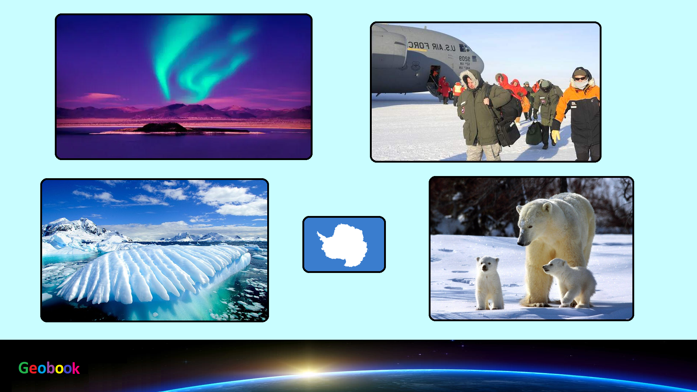

____
Происхождение названия
Название «Антарктида» является романизированной версией греческого слова ἀνταρκτική — женский род от слова ἀνταρκτικός, которое означает «напротив Арктики», «напротив севера».
История
Антарктида была открыта 16 (28) января 1820 года русской экспедицией под руководством Фаддея Беллинсгаузена и Михаила Лазарева, которые на шлюпах «Восток» и «Мирный» подошли к шельфовому леднику в точке (район современного шельфового ледника Беллинсгаузена).
Ранее существование южного материка (лат. Terra Australis) утверждалось гипотетически, нередко его объединяли с Южной Америкой (например, на карте, составленной Пири-реисом в 1513 году) и Австралией.
Двумя днями позднее (30 января) материка достигла британская экспедиция под руководством ирландца Эдварда Брансфилда, ею был открыт полуостров Тринити — северная оконечность Антарктического полуострова. Вновь открытые земли Брансфилд объявил владениями Британии, его судовой журнал и карты были отправлены в Британское адмиралтейство. Позже его судовой журнал был утерян.
Первыми вступила на континент, вероятно, команда американского корабля «Сесилия» 7 февраля 1821 года. Точное место высадки неизвестно, но предполагается, что она произошла в заливе Хьюз.
Это заявление о высадке на континент относится к самым ранним. К наиболее точным относится заявление о высадке на материк (Берег Дейвиса) от норвежского предпринимателя Хенрика Иоганна Булля, датируемое 1895 годом.
____
